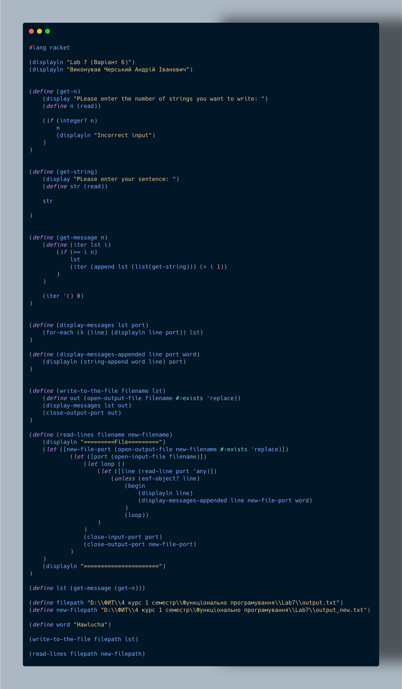

Мета: Опанувати теоретичні основи обробки рядків та текстових файлів мовами функціонального програмування та розробити програми їх реалізації
Умова: Записати в текстовий файл n рядків тексту, що задаються програмою на функціональній мові програмування. Зчитати рядки із створеного програмою файлу, вивести їх на екран. В початок кожного рядка тексту вставити задане користувачем слово. Записати в новий текстовий файл результат обробки тексту.
Аналіз:
1.Завдання передбачає роботу з текстовими файлами на функціональній мові програмування: спочатку програма повинна створити текстовий файл із n рядками, які вона задає сама, потім зчитати ці рядки і вивести їх на екран. Далі користувач задає слово, яке необхідно вставити на початок кожного рядка тексту, після чого програма формує новий текстовий файл із обробленими рядками і зберігає його. Таким чином реалізується послідовність операцій: генерація тексту → читання → модифікація → збереження результату.
Блок-схема:

Код лабораторної работи:

Прикради виконання:

Первірка розрахунків:


Аналіз коду методами штучного інтелекту:
1.У цій лабораторній роботі реалізовано роботу з файлами у Racket: запис рядків, введених користувачем, їх зчитування та створення нового файла з модифікованим вмістом. Функції get-n та get-string відповідають за взаємодію з користувачем: перша зчитує кількість рядків, друга — сам рядок. Дані збираються у список за допомогою рекурсивного ітератора в get-message, який формує впорядковану текстову колекцію. Використання append для побудови списку є робочим, хоча й не оптимальним, але для навчального завдання підходить повністю.
Запис у файл реалізовано у функції write-to-the-file, що відкриває файл з режимом #:exists 'replace, тобто перезаписує існуючий. Виведення здійснюється через display-messages, яка проходить список та виводить кожен елемент у файлопотік. Далі функція read-lines демонструє роботу з потоками введення: вона відкриває початковий файл, читає рядок за рядком за допомогою read-line, виводить прочитане на екран, а також записує у новий файл модифікований рядок — через display-messages-appended, яка додає наперед спеціальне слово. Структура коду чітко реалізує принципи обробки файлів у функціональному стилі.
Третій важливий компонент — коректне керування портами. Автор акуратно закриває як порти вводу, так і виводу (close-input-port, close-output-port), що запобігає зависанню дескрипторів та блокуванню файлів. Усі операції зчитування обгорнуті в рекурсивний цикл loop, який продовжує роботу до досягнення EOF-об’єкта, що робить реалізацію правильною та надійною. Загалом програма демонструє вміння працювати з файлами, потоками та рядками у Racket, а також структуровано реалізує повний цикл: введення → запис → читання → генерація нового файла.
Висновок:
Лабораторна робота демонструє вміння працювати з текстовими файлами та потоками у функціональному стилі на мові Racket. Програма реалізує повний цикл обробки даних: від створення файлу з рядками, введеними користувачем, до зчитування цих рядків, відображення на екрані та формування нового файлу з модифікованим вмістом. Використання рекурсії для збору рядків і обробки файлів показує розуміння функціональних підходів, а управління портами вводу-виводу забезпечує коректну і безпечну роботу з файлами.
Особливу увагу приділено структурованості коду та послідовності операцій: введення → запис → читання → модифікація → збереження. Програма коректно обробляє кінець файлу через перевірку EOF, а вставка заданого користувачем слова у кожний рядок демонструє практичне застосування функцій для роботи з рядками та списками.
Загалом, лабораторна робота успішно досягає поставленої мети: засвоєно основи роботи з текстовими файлами, потоками та рядками у Racket, на практиці закріпив навички рекурсивної обробки даних та створення надійних програм для маніпуляції текстовою інформацією.
Menu